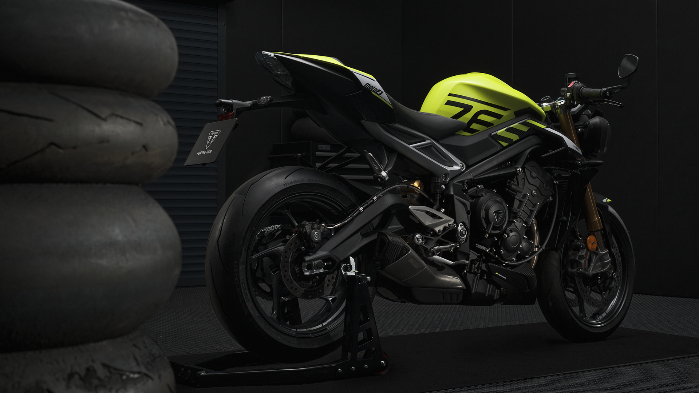
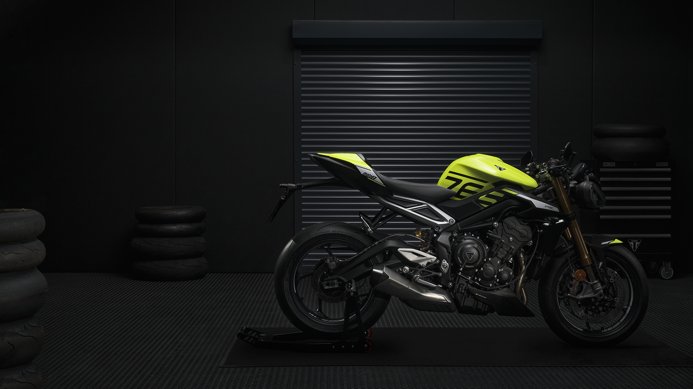

Triumph Street Triple Edition Moto2



La Triumph Street Triple Edition Moto2 est une moto sportive hautement performante qui rend hommage à la domination de Triumph dans le championnat du monde Moto2. Avec son design agressif et ses performances exceptionnelles, cette moto est conçue pour les amateurs de vitesse et d'adrénaline.
Spécifications techniques :
| Modèle | Triumph Street Triple Edition Moto2 |
|---|---|
| Moteur | Triple 765 cm³, 4 temps, refroidissement liquide |
| Puissance | 130 CV (95.6kW) @12000 tr/mn |
| Couple | 80Nm@ 9500 tr/mn |
| Poids | 188 kg |
| Freins | Étriers Brembo monoblocs radiaux à 4 pistons, disques flottants |
| Suspension | Fourche inversée Öhlins NIX30, amortissement réglable en compression et en détente, ainsi qu'en précharge |
| Plein | 15 L |
| Hauteur de la selle | 839 mm |